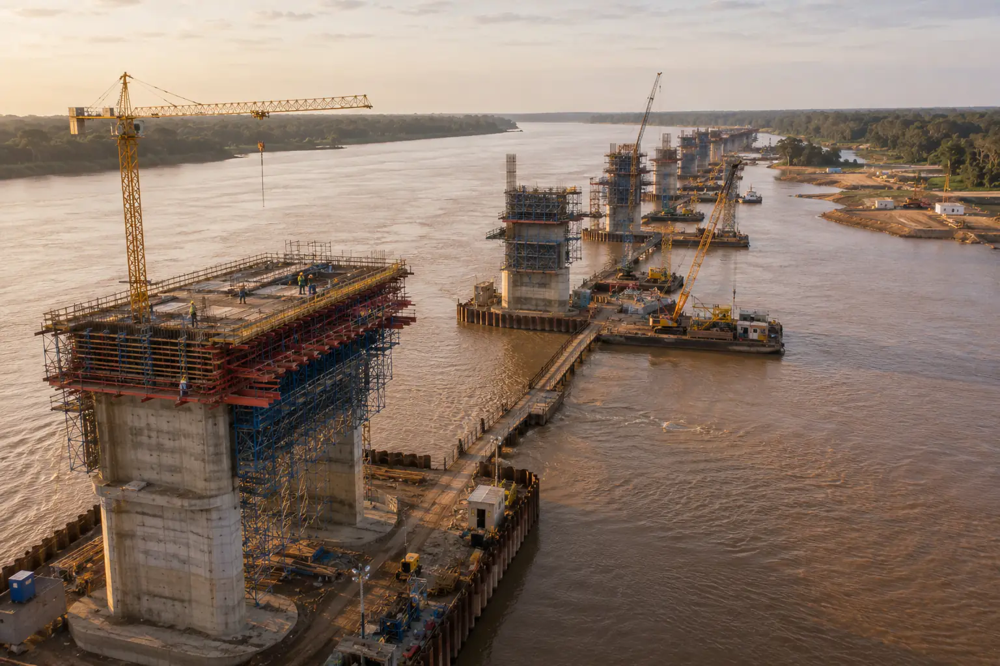

Structure it.
Finance it. Build it.
Keep it running.
Four platforms that can be deployed separately or combined on a single mandate — from the first feasibility study to the twentieth year of operation.
Our platforms
Capabilities that
fit together
Most of our mandates draw on at least two platforms. A road corridor needs civil engineering and a financing structure; a solar cluster needs generation, distribution and an operator who will still be trained in year five.

National and regional road corridors, bridges and structures, ports and airside works, hospitals, schools and administrative buildings. We work in design-build and design-build-maintain formats, and we take constructability responsibility from the feasibility stage onward.
Utility-scale solar and hybrid generation, medium-voltage distribution and rural electrification, potable water production and reticulation, sanitation and solid-waste systems. Every scheme is delivered with metering, a tariff model and an operator training programme.

Haul roads, conveyors, stockyards and port interfaces for the mining sector; processing platforms, cold chain and industrial estates for agro-industry. We structure these mandates so that a defined share of processing — and therefore of margin and skills — remains inside the host country.

Project structuring and financial modelling, concession and PPP documentation, blended finance with development banks, sovereign funds and export credit agencies, and the procurement transparency that lets a ministry defend a transaction in public and in parliament.
Project lifecycle
Six stages,
one accountable team
The same project director is responsible from origination through to the end of the maintenance period. Continuity is the control mechanism.
Origination & feasibility
Demand analysis, route or site selection, environmental and social screening, and an honest first cost envelope — including what it will cost to keep.
Structuring & financing
Concession or contract architecture, risk allocation, and arrangement of sovereign, development-bank, export-credit and commercial tranches.
Design & independent review
Detailed engineering, with a third-party design review commissioned by us and disclosed to the client before mobilisation.
Construction
Local crews, local suppliers and a resident safety regime applied identically to our teams and our subcontractors.
Commissioning & transfer
Performance testing, as-built documentation in the working language of the operator, and a funded spare-parts inventory.
Operations & maintenance
A contracted maintenance period with published availability targets, and a trained national team that can take over at its end.
PPP & development finance
A transaction
a minister can
defend in public
Public-private partnerships fail for predictable reasons: optimistic demand forecasts, risk pushed to the party least able to carry it, and maintenance treated as somebody else's problem. We structure against all three.
Our advisory team works alongside ministries of finance, infrastructure and planning to produce documentation that will survive an audit, a change of government and a public debate — because it was written expecting all three.
Financing sources
Multilateral and bilateral development banks, export credit agencies, sovereign and regional funds, and commercial tranches priced against a real risk allocation.
Transparency package
Published tender records, declared intermediaries, an open variation register and an annual independent review of contract performance.

Next